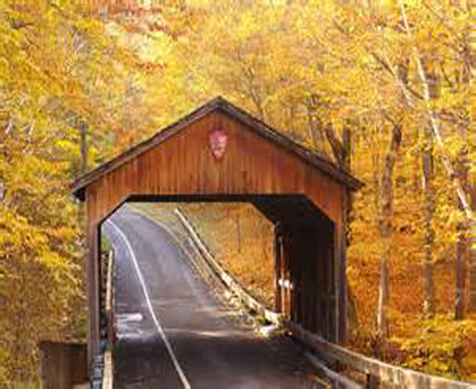
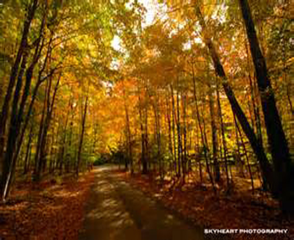
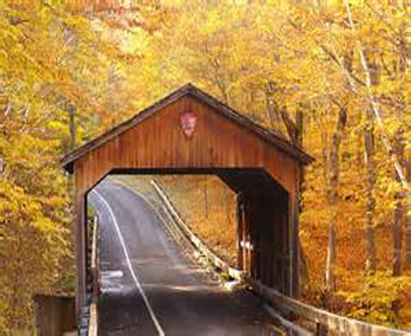
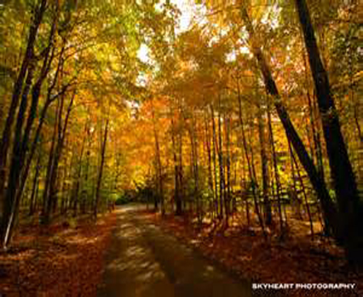
 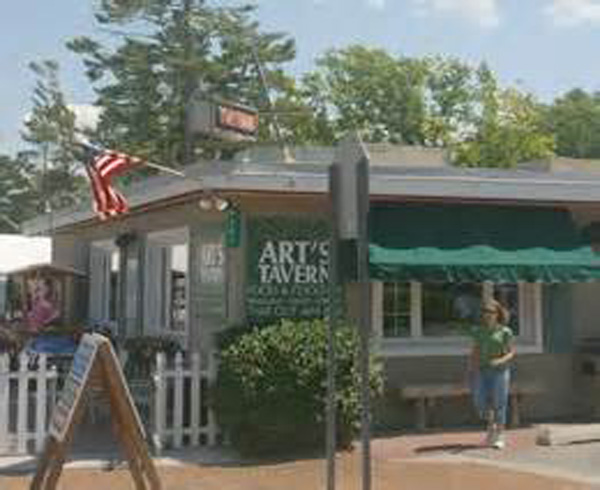
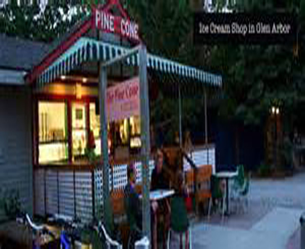
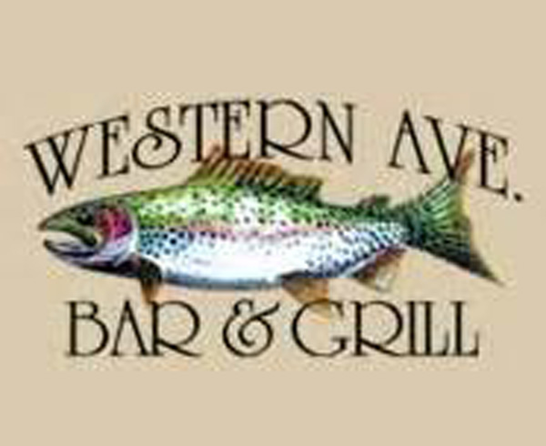
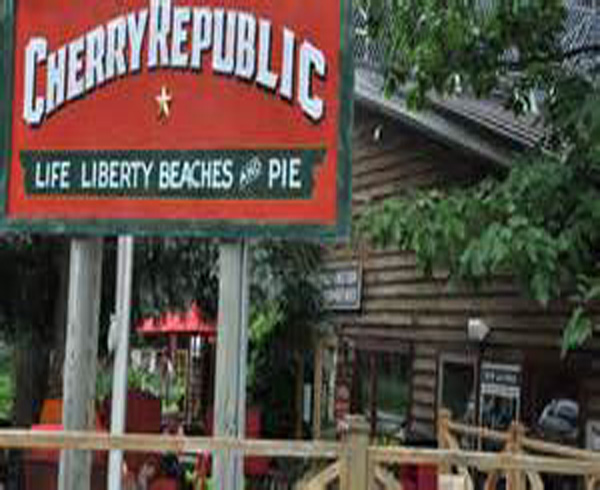
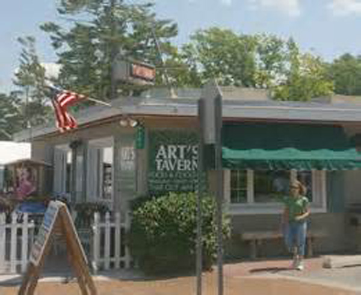
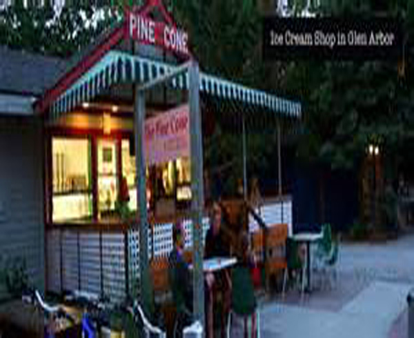
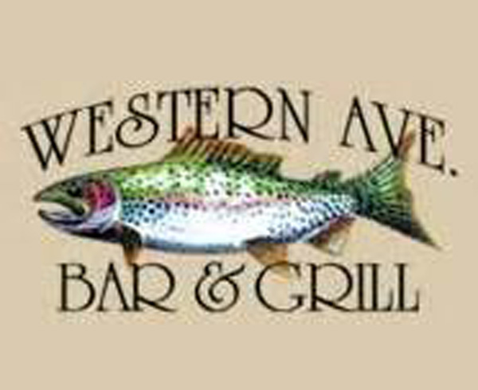
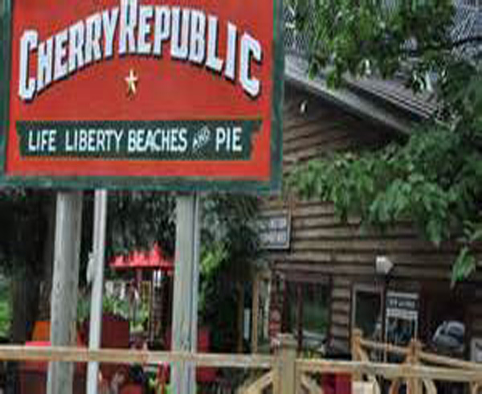


Glen Lakes
The Glen Lakes are what gives the town its name. Arbor means forest and a geln is lake in a forest, so Glen Arbor. This is the second biggest tourist destination next to Sleeping Bear dunes and attracts a large amount of recreational boaters in the summer and ice fisherman in the winter.